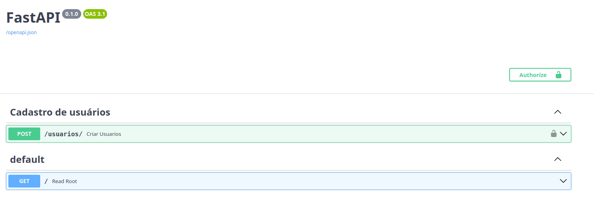
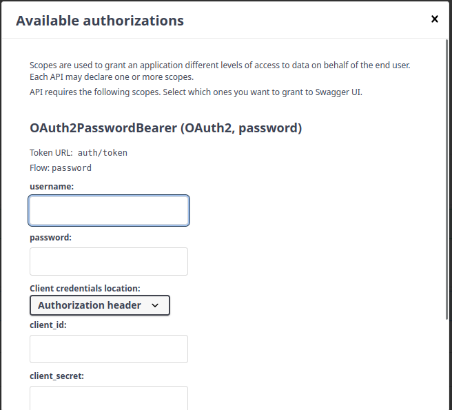
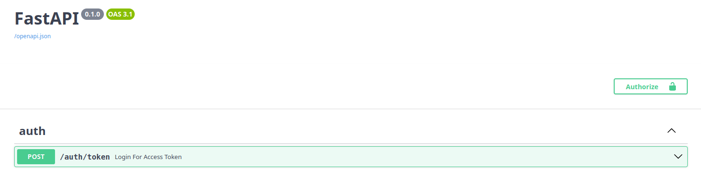

Auth (Acesso)¶
A API usa OAuth2 com fluxo password e JWT (JSON Web Token).
O usuário faz login com email e senha, recebe um token e envia esse token
no cabeçalho Authorization das rotas protegidas.
Visão geral do fluxo¶
┌──────────┐ POST /auth/token ┌────────────┐
│ Cliente │ ─────────────────────────▶│ API │
│ │ username=email&password │ │
│ │ │ 1. busca usuário pelo email
│ │ │ 2. verify_password()
│ │◀───────────────────────── │ 3. create_access_token()
│ │ {access_token, bearer} └────────────┘
│ │
│ │ GET /rota-protegida ┌────────────┐
│ │ ─────────────────────────▶│ API │
│ │ Authorization: Bearer XX │ get_current_user()
│ │ │ - decodifica o JWT
│ │◀───────────────────────── │ - busca usuário pelo "sub"
└──────────┘ resposta └────────────┘
Arquivos envolvidos¶
| Arquivo | Responsabilidade |
|---|---|
src/comprix/security.py |
Funções de segurança: hash de senha, criação e validação do token |
src/comprix/auth.py |
Rota HTTP POST /auth/token (login) |
src/comprix/app.py |
Registra o router com app.include_router(auth.router) |
Importante:
security.pysó contém funções. Quem expõe o login via HTTP é o router emauth.py. OOAuth2PasswordBearer(tokenUrl='auth/token')apenas informa ao Swagger para onde enviar o login — ele não cria a rota.
security.py¶
get_password_hash(senha)¶
Gera o hash da senha com pwdlib (PasswordHash.recommended(), Argon2).
Use ao cadastrar ou alterar a senha de um usuário. A senha nunca é salva em texto puro.
verify_password(senha, hashed_password)¶
Compara a senha digitada com o hash salvo no banco. Retorna True ou False.
create_access_token(data)¶
Cria o JWT a partir de um dicionário. Claims adicionadas:
| Claim | Conteúdo |
|---|---|
sub |
Email do usuário (identificador) |
exp |
Data de expiração: agora (UTC) + ACCESS_TOKEN_EXPIRE_MINUTES |
is_admin |
True apenas quando sub == ADMIN_EMAIL |
O token é assinado com SECRET_KEY usando o algoritmo ALGORITHM (definidos em Settings).
get_current_user(session, token)¶
Dependência usada nas rotas protegidas:
- Lê o token do cabeçalho
Authorization: Bearer <token>(viaoauth2_scheme). - Decodifica e valida a assinatura e a expiração.
- Busca o usuário pelo email do
sub. - Em qualquer falha (token inválido, expirado, sem
subou usuário inexistente) retorna 401 — "Credencial inválida".
Exemplo de uso em uma rota:
from comprix.security import get_current_user
CurrentUser = Annotated[Usuarios, Depends(get_current_user)]
@router.get('/me')
async def me(usuario: CurrentUser):
return usuario
auth.py — rota de login¶
POST /auth/token¶
Perceba na imagem abaixo, que agora na nossa documentação do Swagger, temos um botão Autorize.

Recebe os dados como form-data (application/x-www-form-urlencoded),
como exige a especificação OAuth2.

| Campo | Conteúdo |
|---|---|
username |
Email do usuário |
password |
Senha |
O nome do campo é
usernamepor exigência do OAuth2, mas no Comprix ele sempre recebe o email. No código:form_data.username→ email.
Respostas
| Status | Quando | Corpo |
|---|---|---|
200 |
Email e senha corretos | {"access_token": "...", "token_type": "bearer"} |
401 |
Email inexistente ou senha errada | {"detail": "Email ou senhas incorretos"} |
422 |
Campos ausentes | Erro de validação do FastAPI |
A mesma mensagem é usada para email inexistente e senha errada, para não revelar quais emails estão cadastrados.
Exemplo com curl
curl -X POST http://127.0.0.1:8000/auth/token \
-H "Content-Type: application/x-www-form-urlencoded" \
-d "username=usuario@email.com&password=minhasenha"
Usando o token:
Nossa primeira Rota¶
Sabemos agora como é todo o procedimento de seguração da nossa aplicação, vamos para o nosso código.
src/comprix/
├── routers/
│ ├── __init__.py
│ └── auth.py ← novo arquivo
├── app.py
├── database.py
├── models.py
├── security.py
└── settings.py
Dica
Se o diretório routers ainda não existir, crie também um arquivo
__init__.py vazio dentro dele, para que o Python o reconheça como pacote.
O código¶
from http import HTTPStatus
from typing import Annotated
from fastapi import APIRouter, Depends, HTTPException
from fastapi.security import OAuth2PasswordRequestForm
from sqlalchemy import select
from sqlalchemy.ext.asyncio import AsyncSession
from comprix.database import get_session
from comprix.models import Usuarios
from comprix.security import create_access_token, verify_password
router = APIRouter(prefix='/auth', tags=['auth'])
Session = Annotated[AsyncSession, Depends(get_session)]
OAuth2Form = Annotated[OAuth2PasswordRequestForm, Depends()]
@router.post('/token')
async def login_for_access_token(form_data: OAuth2Form, session: Session):
# form_data.username contém o email digitado
usuario = await session.scalar(
select(Usuarios).where(Usuarios.email == form_data.username)
)
if not usuario or not verify_password(form_data.password, usuario.senha):
raise HTTPException(
status_code=HTTPStatus.UNAUTHORIZED,
detail='Email ou senhas incorretos',
)
access_token = create_access_token(data={'sub': usuario.email})
return {'access_token': access_token, 'token_type': 'bearer'}
Entendendo o código¶
1. Criando o router¶
O APIRouter agrupa rotas relacionadas.
prefix='/auth': todas as rotas deste arquivo começam com/auth. Assim,@router.post('/token')viraPOST /auth/token.tags=['auth']: agrupa as rotas na seção auth do Swagger.
2. Atalhos com Annotated¶
Session = Annotated[AsyncSession, Depends(get_session)]
OAuth2Form = Annotated[OAuth2PasswordRequestForm, Depends()]
Em vez de repetir Depends(...) em cada rota, criamos tipos que já carregam a
dependência:
Session: injeta a sessão assíncrona do banco de dados.OAuth2Form: lê os camposusernameepassworddo corpo da requisição em formato form-data, como exige o OAuth2.
Atenção
Se você misturar form_data = Depends() com session: Session, o Python
acusa o erro "Parameter without a default cannot follow a parameter with a
default". Usar Annotated nos dois parâmetros resolve isso.
3. Definindo a rota¶
A função recebe o formulário de login e a sessão do banco, ambos injetados automaticamente pelo FastAPI.
4. Buscando o usuário¶
Procura no banco um usuário com o email informado. O campo se chama username
por exigência do OAuth2, mas no Comprix ele contém o email.
O session.scalar() retorna o usuário encontrado ou None.
5. Validando email e senha¶
if not usuario or not verify_password(form_data.password, usuario.senha):
raise HTTPException(
status_code=HTTPStatus.UNAUTHORIZED,
detail='Email ou senhas incorretos',
)
O login é recusado com 401 se:
- o usuário não existir; ou
- a senha não corresponder ao hash salvo no banco.
A ordem importa: not usuario vem primeiro. Se o usuário não existir, o Python
nem chega a avaliar usuario.senha, o que evita um AttributeError.
Por que a mesma mensagem nos dois casos?
Se a API respondesse "email não encontrado" ou "senha incorreta", alguém poderia descobrir quais emails estão cadastrados apenas tentando logar. Uma mensagem genérica evita isso.
6. Gerando o token¶
access_token = create_access_token(data={'sub': usuario.email})
return {'access_token': access_token, 'token_type': 'bearer'}
Cria o JWT com o email do usuário na claim sub e devolve no formato que o
OAuth2 (e o botão Authorize do Swagger) esperam.
Registrando o router¶
Sem esta etapa a rota não existe, e qualquer chamada retorna 404.
No app.py, inclua o router:
Para conferir, acesse /docs e verifique se a rota POST /auth/token aparece
na seção auth.

Testes¶
Crie o arquivo test_auth.py dentro do diretório tests:
O código¶
from http import HTTPStatus
from jwt import decode
from comprix.settings import Settings
settings = Settings()
def test_login_sucesso(client, usuario):
"""Teste de autenticação, passando os parametros da rota"""
response = client.post(
'/auth/token',
data={'username': usuario.email, 'password': usuario.clean_password},
)
# Retorna o código 200 - sucesso
assert response.status_code == HTTPStatus.OK
# verifica se dentro do json do token tem o 'bearer'
assert response.json()['token_type'] == 'bearer'
# verifica se dentro do json tem o token
assert response.json()['access_token']
def test_token_comtem_email_e_expiracao(client, usuario):
"""Teste que verifica se dentro do token existe as CLAINS sub e exp"""
# Faz a requisição de autenticação passando os parametros
response = client.post(
'/auth/token',
data={'username': usuario.email, 'password': usuario.clean_password},
)
# Guarda o token em um objeto
token = response.json()['access_token']
# Utiliza o decode para comparar
payload = decode(
token, settings.SECRET_KEY, algorithms=[settings.ALGORITHM]
)
# verifica se dentro do token o sub e igual o email
assert payload['sub'] == usuario.email
# verifica se dentro do token tem o 'exp' de expiração
assert 'exp' in payload
def test_login_senha_incorreta(client, usuario):
"""Teste que verifica quando o usuário digita a senha inválida"""
# Faz a requisição de autenticação passando os parametros
response = client.post(
'/auth/token',
data={'username': usuario.email, 'password': 'senha_errada'},
)
# verifica se o status code É 401 NÃO AUTORIZADO
assert response.status_code == HTTPStatus.UNAUTHORIZED
# verifica se a mensagem está correta no json
assert response.json()['detail'] == 'Email ou senhas incorretos'
def test_login_email_incorreto(client, usuario):
"""Teste que verifica quando o email digito está inválido"""
# Faz a requisição de autenticação passando os parametros
response = client.post(
'/auth/token',
data={
'username': 'incorreto@email.com',
'password': usuario.clean_password,
},
)
# verifica se o status code É 401 NÃO AUTORIZADO
assert response.status_code == HTTPStatus.UNAUTHORIZED
# verifica se a mensagem está correta no json
assert response.json()['detail'] == 'Email ou senhas incorretos'
def test_login_sem_campos_digitados(client):
"""Teste quando solicita a autenticação e não digita os email e senha"""
# Faz a requisição de autenticação passando os parametros
response = client.post('/auth/token', data={})
# verifica se o status code É 422 UNPROCESSABLE_ENTITY
assert response.status_code == HTTPStatus.UNPROCESSABLE_ENTITY
A fixture usuario¶
Os testes usam a fixture usuario, definida no conftest.py. Ela cria um
usuário no banco de testes antes de cada teste que a solicita.
@pytest_asyncio.fixture
async def usuario(session):
senha = 'testing_senha'
usuario = Usuarios(
nome='Usuário Teste',
email='teste@comprix.com',
senha=get_password_hash(senha), # o banco guarda o hash
)
session.add(usuario)
await session.commit()
await session.refresh(usuario)
usuario.clean_password = senha # senha original, só para os testes
return usuario
- A senha é salva com hash, como o cadastro real faria.
add+commitgravam o usuário no banco.refreshrecarrega o objeto com os dados gerados pelo banco (como oid).clean_passwordguarda a senha original em memória. Não é uma coluna do model e não vai para o banco.
Senha em texto puro nos testes
O banco guarda apenas o hash da senha. No login do teste, use
usuario.clean_password (a senha original) e não usuario.senha (o hash).
Enviar o hash faz o verify_password falhar e a rota retorna 401.
Entendendo os testes¶
Configuração inicial¶
decode: usado para abrir o token e conferir as claims.settings: fornece aSECRET_KEYe oALGORITHM, os mesmos usados pela aplicação para assinar o token.
test_login_sucesso¶
response = client.post(
'/auth/token',
data={'username': usuario.email, 'password': usuario.clean_password},
)
Faz o login com email e senha corretos.
Repare que usamos data= e não json=: a rota espera os dados em
form-data, como exige o OAuth2. Com json=, a resposta seria 422.
Verificações:
| Assert | O que garante |
|---|---|
status_code == HTTPStatus.OK |
O login foi aceito (200) |
token_type == 'bearer' |
O tipo do token está no formato OAuth2 |
access_token |
O token foi gerado e não está vazio |
test_token_comtem_email_e_expiracao¶
token = response.json()['access_token']
payload = decode(token, settings.SECRET_KEY, algorithms=[settings.ALGORITHM])
Faz o login, pega o token da resposta e o decodifica. O payload é um
dicionário com as claims do token.
| Assert | O que garante |
|---|---|
payload['sub'] == usuario.email |
O token identifica o usuário correto |
'exp' in payload |
O token tem data de expiração |
Esse teste também prova que o token foi assinado com a SECRET_KEY correta:
se não fosse, o decode lançaria um erro e o teste falharia.
test_login_senha_incorreta¶
O usuário existe, mas a senha está errada. O verify_password retorna False
e a rota responde:
| Assert | O que garante |
|---|---|
status_code == HTTPStatus.UNAUTHORIZED |
O login foi recusado (401) |
detail == 'Email ou senhas incorretos' |
A mensagem genérica foi retornada |
test_login_email_incorreto¶
Aqui a senha é válida, mas o email não existe no banco. O session.scalar()
retorna None e a rota recusa o login.
O resultado esperado é idêntico ao do teste anterior: mesmo status 401 e
mesma mensagem. Isso confirma que a API não revela se o problema foi o email
ou a senha.
Por que usar a senha correta aqui?
Usando a senha válida de um usuário existente, garantimos que o 401
acontece apenas por causa do email, isolando o cenário testado.
test_login_sem_campos_digitados¶
Envia o formulário vazio. O OAuth2PasswordRequestForm exige username e
password, então a validação falha antes de a rota ser executada, e o
FastAPI responde automaticamente com 422.
Esse teste não precisa da fixture usuario, porque nem chega a consultar o
banco.
Resumo¶
| Teste | Cenário | Esperado |
|---|---|---|
test_login_sucesso |
Email e senha corretos | 200 + token |
test_token_comtem_email_e_expiracao |
Conteúdo do token | sub e exp |
test_login_senha_incorreta |
Senha errada | 401 |
test_login_email_incorreto |
Email não cadastrado | 401 |
test_login_sem_campos_digitados |
Formulário vazio | 422 |
Executando os testes¶
Todos os testes de autenticação:
Apenas um teste:
Saída esperada:
tests/test_auth.py::test_login_sucesso PASSED
tests/test_auth.py::test_token_comtem_email_e_expiracao PASSED
tests/test_auth.py::test_login_senha_incorreta PASSED
tests/test_auth.py::test_login_email_incorreto PASSED
tests/test_auth.py::test_login_sem_campos_digitados PASSED
Conclusão¶
Com isso, temos a primeira rota da aplicação funcionando e testada. 🎉
O que construímos¶
security.py: as ferramentas de segurança (hash de senha, criação e validação do token JWT).routers/auth.py: a rotaPOST /auth/token, que recebe email e senha e devolve um token de acesso.app.py: o registro do router, que torna a rota disponível na API.tests/test_auth.py: os testes que garantem que o login funciona e que os cenários de erro são tratados corretamente.
O que aprendemos¶
| Conceito | Na prática |
|---|---|
| OAuth2 password flow | O cliente troca email e senha por um token |
| JWT | O token carrega o email (sub) e a validade (exp), assinado com a SECRET_KEY |
| Hash de senha | O banco nunca guarda a senha real, apenas o hash gerado com Argon2 |
APIRouter |
Organiza as rotas por assunto, com prefixo e tag no Swagger |
Annotated + Depends |
Injeta a sessão do banco e o formulário de login de forma limpa |
| Mensagem genérica de erro | A API não revela se o email está cadastrado |
| Fixtures | Preparam o banco de testes com um usuário antes de cada teste |
O fluxo completo¶
- O usuário envia email e senha para
POST /auth/token. - A API busca o usuário pelo email e confere a senha com
verify_password. - Se estiver tudo certo, a API gera o token com
create_access_token. - O cliente usa esse token no cabeçalho
Authorization: Bearer <token>para acessar as rotas protegidas.
Rota pronta
A partir de agora, o botão Authorize do Swagger funciona: basta informar email e senha para testar as rotas protegidas direto pela documentação.
Próximos passos¶
- Proteger as rotas da aplicação usando
get_current_usercomo dependência. - Criar a rota
POST /auth/refreshpara renovar o token (já declarada norefreshUrldooauth2_scheme). - Testar rotas protegidas com token válido, inválido e expirado.
- Usar a claim
is_adminpara restringir rotas administrativas.